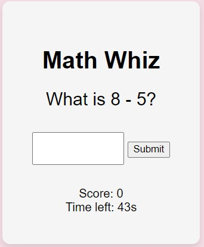
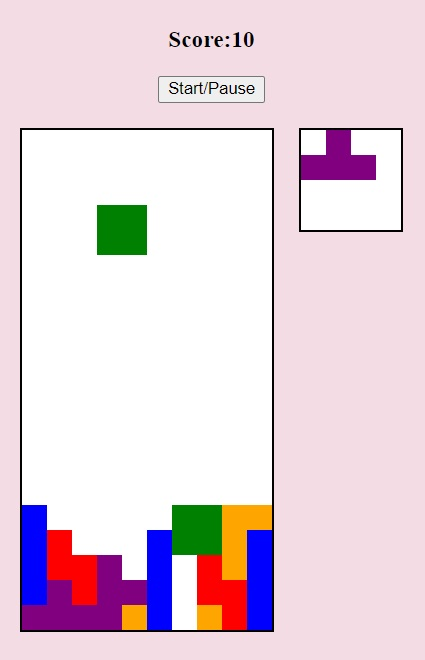

Click on an image below to play the game. Instructions are below each image.
Memory Card

Enhance your memory with this Memory Card game. Start with all cards face down and flip two at a time to reveal them. If the cards match, then they will stay face-up. If the cards don't match, they will turn face-down again. Remember the card positions and try to find their matches. The shape and colour of the cards must match.
Cognitive Enhancement: Improves short-term memory and spatial awareness.
Slider Puzzle

Move the numbers around so that the top row shows the number 1 to 3, the second row shows 4 to 6 and the third row shows 7 & 8, with the bottom right corner showing the black square. Click a number to move the number into an empty space.
Cognitive Enhancement: Slider puzzles can improve spatial reasoning and problem-solving skills as you visualize and plan moves to achieve the goal.
Big Daddy Slider Puzzle
More challenging than the 3x3 puzzle. Can you handle Big Daddy?
Hangman (not playable on a phone)

Test your vocabulary and spelling skills with Hangman. Guess letters to fill in the blanks for a hidden word before the drawing of a hangman is completed. Each incorrect guess brings the hangman closer to completion.
Cognitive enhancement: Deciphering word patterns in Hangman can enhance cognitive flexibility, the mental ability to switch between thinking about two different concepts.
Typing Speed Test (not playable on a phone)

Measure and improve your typing skills with this Typing Speed Test. Type exactly what you see, including capitlisation, spaces and punctuation. The green letter is the position of the cursor and the green letter needs to be typed. You have 60 seconds. The game tracks your Words Per Minute (WPM) and Characters Per Minute (CPM).
Improved Cognitive-Motor Skills: This game enhances hand-eye coordination and fine motor skills. Concentration Skills: It requires and thus builds intense focus and concentration over short bursts of time.
Math Whiz
A fun math challenge where you get to apply your math skills to complete as many calculations as you can in 60 seconds. Press enter to submit each answer.
Problem-Solving Skills: Math games improve arithmetic skills and enhance the ability to approach problems systematically.
Word Scramble

Put your word recognition to the test with Word Scramble. Given a set of scrambled letters, your task is to rearrange them to form a word related to the provided hint. It's a race against the clock with only 30 seconds to unscramble each word!
Enhances Vocabulary and Language Skills: Word puzzles can expand your vocabulary and improve language skills by introducing new words. Enhances Cognitive Flexibility: The challenge of thinking about words in a different way (unscrambling letters) promotes cognitive flexibility, helping you to think more creatively and adaptively.
Tetris (not playable on a phone)
Arrange the shapes so that they create a horizontal line of pieces at the bottom of the screen without any gaps between the pieces.Press the up up key to rotate the pieces. Long press the down key to move the pieces quicker down the screen. The small yellow square on the right shows the next piece.
Enhances Cognitive Skills: Tetris requires and thus sharpens problem-solving skills, spatial awareness, and quick decision-making, potentially leading to improved cognitive function.
Pong (not playable on a phone)
This game simulates a ping-pong game. You control the left paddle. Press spacebar to start the game. Use the up and down keys to move the paddle to deflect the ball. There is no time limit for this game.
Cognitive enhancement: Playing this game can improve hand-eye coordination, reaction times, and spatial awareness. Pong can help in fine-tuning motor skills and improving the precision of neural responses to visual cues.